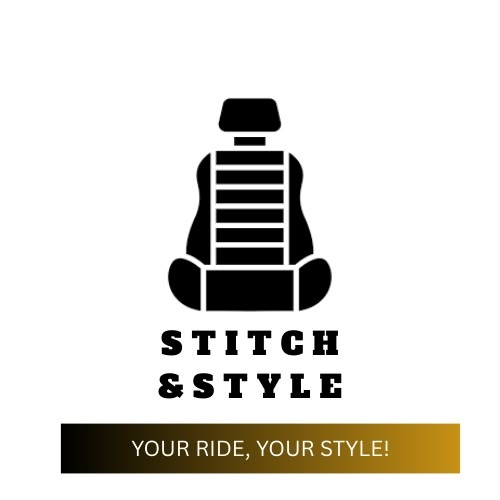

01
Seat Refurbishment
Refresh worn seats or create a completely new look with custom upholstery.
Enquire about seats ↗
CUSTOM CAR INTERIOR UPHOLSTERY
Give your car interior a look and feel that is uniquely yours. From a single detail to a complete makeover, we bring your vision to life.
We customise and refresh vehicle interiors with careful workmanship and materials chosen around your preference. Tell us what you have in mind, and let's create a finish that feels right for you.
WHAT WE DO
From everyday comfort to a complete interior refresh, explore our upholstery services.
Refresh worn seats or create a completely new look with custom upholstery.
Enquire about seats ↗Restore sagging or tired headliners for a clean, neat cabin finish.
Enquire about roof lining ↗Give your vehicle flooring a fresh, coordinated and well-finished look.
Enquire about flooring ↗Upgrade the feel and finish of one of the details you touch every day.
Enquire about steering ↗Personalise and refresh your dashboard with a finish that complements your cabin.
Enquire about dashboard ↗Bring the whole cabin together with a coordinated custom interior.
Plan your makeover ↗CHOOSE YOUR FINISH
We work with both leather and fabric, giving you the freedom to choose the material and finish that suit your taste, vehicle and budget.
Ask about materials ↗HOW IT WORKS
Every project starts with what you want. We help you explore the options and agree on a finish before work begins.
Share the vehicle, the area you want upholstered and the look you have in mind.
Discuss leather or fabric options, colours, finishes and your preferred budget.
We assess the work and provide a quotation based on your choices and project scope.
We bring your chosen style to life with care and attention to detail.
YOUR CAR. YOUR MATERIAL. YOUR STYLE.
LET'S TALK ABOUT YOUR CAR
Tell us what you would like to transform. We'll help you explore the options and prepare a quotation based on your material preference and the work required.
Buruburu Phase 4, along Mumias Road,
opposite Phase 4A gate, 50m from QuickMart.